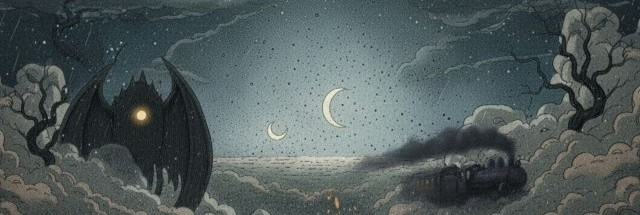

Historia Interactiva
"El Dragón" es una historia interactiva basada en el cuento original de Ray Bradbury, donde dos caballeros de un pequeño pueblo intentan encontrar y derrotar a un misterioso dragón que amenaza no solo a ellos, sino también a los pueblos cercanos.